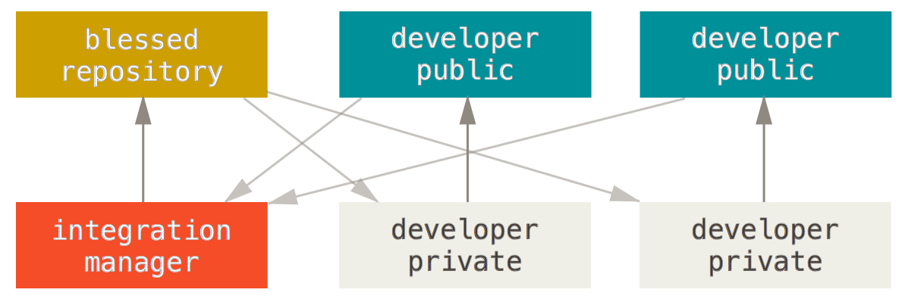

Introduction
Versioning
- What?
- Who use versioning?
History
- Created by Linus Torval in 2005
- BitKeeper privatization
- Most used with 12,000,000 users in 2016
Version control systems
- Save time stamped directory
- Error prone (ex : writing in wrong directory)
Local VCS

- RCS
- Included in MAC OS X
- Database saves changes
Centralized VCS

- Subversion, Perforce
- Single server with all files
- Standard for many years
- Everyone knows what others do
- Manage admin rights
- Server goes down
- Database corrupted
Distributed VCS

- Git, Mercurial
- Client gets the repository
- Can clone from another client
- No server
What you must understand
Three states

- Modified
- Staged
- Commited
Branch
What is a branch?

Git flow

Quick start
Use console

Clone
git clone https://github.com/aixjs/git-demo.git
Create
git init
Create branch
git checkout -b demo
Add files to staged
git add --a
Save snap
git commit -m "my comment"
Merge
git checkout mastergit merge demo
Send your beautiful code
git push origin master
Add a tag
git tag -a v1.2 -m "demo tag"git push --tag origin master
Good practices

.gitignore

Git stash
git stashgit stash apply
Force

git push -f
Comment
git commit -m "guess what :)"
Tools
Services


GUI

Git sheet
hereWorkflows

Centralized Workflow
Simple for small team and tiny project.

- Just master
- Managing conflicts
- Like SVN
Feature Branch Workflow
- Encourages collaboration
- Streamline communication
- Easy to work on a particular feature without disturbing
- Master branch will never contain broken code
- Use pull request
Forking Workflow
Contribute to project with fork.

- No central codebase
- Each has a private local repository and a public server
- No official repository
- Use pull request
Integration-Manager Workflow
Questions?